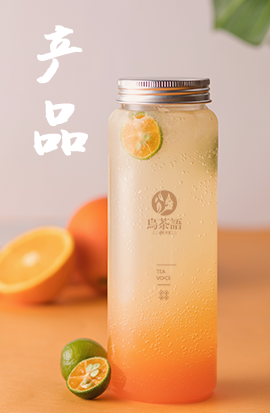

尚京集团以敏锐的眼光聚焦“百业之王”的餐饮行业，致力于世界绿色健康美食文化的交流与发展，以“成为世界级餐饮运营服务平台，打造全球化的餐饮服务品牌”为目标。

乌茶语，以乌龙为正题，民国风韵为谈资并与各路辅料跨界交流，将中国茶叶的魅力娓娓道来。炼出“一杯私房茶、温婉细腻”的品牌风格，将民国时期的浪漫与温婉都汇入茶里。
我们拥有国内领先的低温烘焙技术和低温超微粉碎、挤压膨化等设备，所有原材料的采购均与生产地挂钩，收购、运输、储存等各个环节均严格按照国家食品安全标准执行。
集团本着以诚信务实、厚德载物、严明忠诚、勤学躬行为核心价值观，以稳健共赢为理念。使店面遍布全国各大商圈，品牌版图涉及欧亚东盟等世界各地的综合型跨国集团公司。